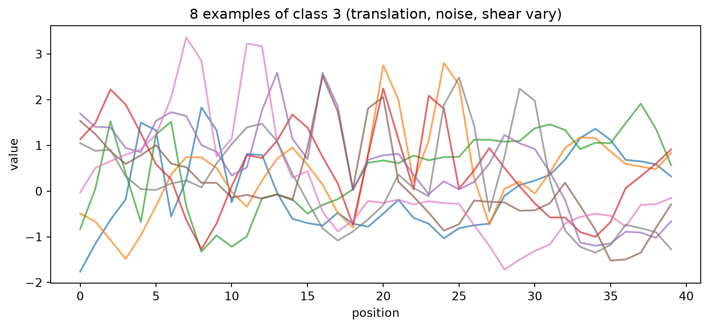
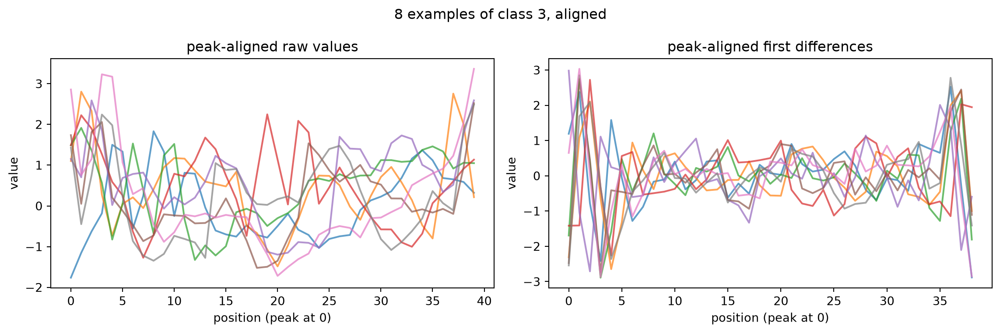
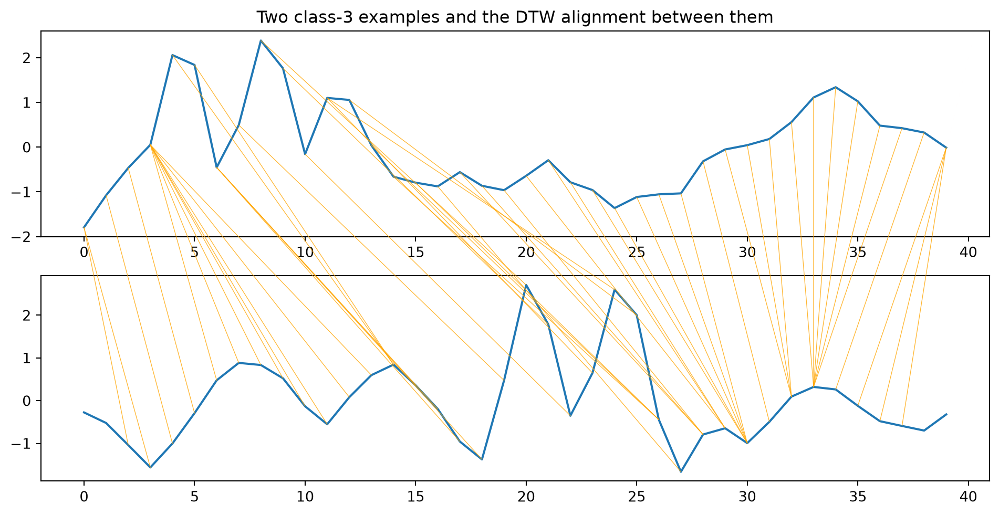
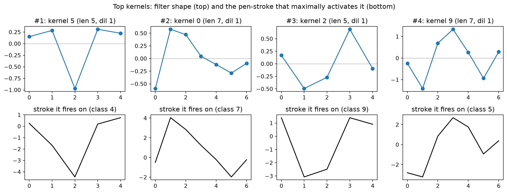

MNIST-1D (Greydanus & Steinbach, 2020) is a procedurally generated dataset that contains 1D-representations of the digits in the MNIST dataset. Here we try to fit some simple models on it and see if we can do well without neural networks. First, let’s load it and look at some examples.
We also show some examples of the class “3” to show within-class variation.
# Several examples of a single class to show within-class variationdigit =3idxs = np.where(y == digit)[0][:8]plt.figure(figsize=(10, 4))for i in idxs: plt.plot(X[i], alpha=0.7)plt.title(f"8 examples of class {digit} (translation, noise, shear vary)")plt.xlabel("position"); plt.ylabel("value")plt.show()

Unlike “normal” 2D MNIST, the class structure is not visually obvious, which is what makes the benchmark interesting. Still, we can see a rotated “3” in each of the lines, though not always in the same place.
In the paper, several models were fit to the dataset. Their scores are below: | Model | Test acc | |—|—| | Logistic regression | 33% | | MLP (paper) | 68% | | GRU (paper) | 91% | | CNN (paper) | 94% | | Human expert (paper) | 96% |
Train logistic regression
In the article, the authors show that a logistic regression model (which can obtain 94% accuracy on the MNIST dataset), only obtains 32% accuracy on this MNIST-1D dataset. Let’s try to reproduce that.
We fit a logistic regression model on the raw 40 features.
As mentioned previously, the sideways-3 we saw in each example was not always in the same place. Logistic regression on the raw signal cannot cope with this random translation. The same digit drawn at position 5 vs 25 looks like a different input to a linear model.
To try to cope with this, we can roll each signal so its point of peak activity sits at index 0. That removes the shift while keeping the full ordered shape. We can also try to feed the model first differences (the pen’s velocity when drawing the digit).
from scipy.ndimage import gaussian_filter1dfrom scipy.signal import detrenddef velocity(Z): V = np.diff(detrend(Z, axis=1), axis=1) # pen velocity, shear removedreturn V / (V.std(1, keepdims=True) +1e-8)def peak_align(V):"""Roll each signal so its peak (smoothed |velocity|) sits at index 0.""" anchor = gaussian_filter1d(np.abs(V), 2, axis=1).argmax(1)return np.stack([np.roll(v, -a) for v, a inzip(V, anchor)])raw = LogisticRegression(max_iter=5000).fit(velocity(X), y)aligned = LogisticRegression(max_iter=5000).fit(peak_align(X), y)aligned_velocity = LogisticRegression(max_iter=5000).fit(peak_align(velocity(X)), y)print(f"logreg on velocity (no alignment) : {(raw.predict(velocity(X_test)) == y_test).mean():.1%}")print(f"logreg on peak-aligned raw values : {(aligned.predict(peak_align(X_test)) == y_test).mean():.1%}")print(f"logreg on peak-aligned velocity : {(aligned_velocity.predict(peak_align(velocity(X_test))) == y_test).mean():.1%}")
logreg on velocity (no alignment) : 19.9%
logreg on peak-aligned raw values : 56.9%
logreg on peak-aligned velocity : 71.6%
Feeding the model the first differences hurts performance. Feeding it the peak-aligned raw values increases the performance from 33% to 57%, and combining the two, gives us 71.6%, just beating the MLP of the paper.
To see what the alignment does, here are the same 8 class-3 examples after peak-aligning the raw values (left) and after peak-aligning their first differences (right).
idxs = np.where(y ==3)[0][:8]aligned_raw = peak_align(X[idxs])aligned_diff = peak_align(velocity(X[idxs]))fig, (ax1, ax2) = plt.subplots(1, 2, figsize=(12, 4))for r in aligned_raw: ax1.plot(r, alpha=0.7)ax1.set_title("peak-aligned raw values")for d in aligned_diff: ax2.plot(d, alpha=0.7)ax2.set_title("peak-aligned first differences")for ax in (ax1, ax2): ax.set_xlabel("position (peak at 0)"); ax.set_ylabel("value")fig.suptitle("8 examples of class 3, aligned")fig.tight_layout()plt.show()

Immediately we see some problems with this approach. Sometimes the noise dominates the “3” shape, so the shape itself ends up in the middle. Also, sometimes the shape is aligned at the first bump of the 3, sometimes at the second, causing the first bump to be all the way at the end of the image.
Dynamic Time Warping
Let’s try something more fancy: Dynamic Time Warping (DTW). This technique stretches and translates time series to try to align them, giving a score on the final alignment obtained. We can then make a classifier that combines this score with a k-NN model, selecting the most common class of the k examples that align best with the input.
from dtaidistance import dtwfrom scipy.signal import detrendfrom scipy.stats import modedef prep(Z):"""Remove the shear (detrend) and amplitude/offset (z-normalize) per signal.""" Z = detrend(Z, axis=1)return (Z - Z.mean(1, keepdims=True)) / (Z.std(1, keepdims=True) +1e-8)def knn_vote(cross, ytr, yte, k): nn = np.argsort(cross, axis=1)[:, :k]return (mode(ytr[nn], axis=1, keepdims=False).mode == yte).mean()Xtr_p, Xte_p = prep(X), prep(X_test)# Euclidean k-NN baseline (no time warping)eu = np.linalg.norm(Xte_p[:, None, :] - Xtr_p[None, :, :], axis=2)# Full 1000x4000 DTW cross-distance matrix (~7s with the C backend)series = [np.ascontiguousarray(s, dtype=np.double) for s in np.vstack([Xte_p, Xtr_p])]nA =len(Xte_p)full = dtw.distance_matrix_fast(series, block=((0, nA), (nA, len(series))), compact=False)dtw_d = full[:nA, nA:]ks = (1, 3, 5, 7, 9)for name, d in [("Euclidean", eu), ("DTW", dtw_d)]: best_k =max(ks, key=lambda k: knn_vote(d, y, y_test, k))print(f"{name:>10} k-NN (detrend+znorm) best k={best_k}: {knn_vote(d, y, y_test, best_k):.1%}")
Euclidean k-NN (detrend+znorm) best k=7: 57.5%
DTW k-NN (detrend+znorm) best k=9: 83.3%
Applying k-NN to the raw data scores around 57% (k=7), but first applying DTW scores 83% (with k=9), beating our logistic regression.
To see what DTW does, here is the optimal alignment it finds between two different class-3 examples. The orange lines connect matched points: DTW stretches and shifts the horizontal (time) axis so the bumps of one “3” line up with the bumps of the other, even though they were drawn at different positions.
from dtaidistance import dtw_visualisation as dtwvis# Two different class-3 examples, prepared the way the classifier sees thema, b = np.where(y ==3)[0][:2]s1, s2 = prep(X[[a]])[0], prep(X[[b]])[0]path = dtw.warping_path(s1, s2, psi =2)fig, axs = plt.subplots(2, 1, figsize=(10, 5))dtwvis.plot_warping(s1, s2, path, fig=fig, axs=axs)axs[0].set_title("Two class-3 examples and the DTW alignment between them")plt.show()

We see a problem, however, which is that the DTW is not “cyclic”; the beginning of one shape is mapped to the beginning of the other shape, and the ends are mapped as well. In this example, there is not enough signal to the left of the top 3 to accommodate for everything that is on the left of the bottom 3.
We can run DTW “open-ended” by setting the psi argument in dtadistance. That way, we let a few points at the start and end of each signal be skipped for free, so the path no longer has to pin 0 to 0 and 40 to 40. Setting psi to 2 improved the accuracy to 86%.
ROCKET
Maybe we do need convolutions to deal with the combination of noise and translations applied to our digits. But instead of using CNN, we apply random convolutions and put linear models on top. This is the idea of the ROCKET model.
Here, we create 400 random convolutional kernels of length 5, 7 or 9 and apply them to our digit. After that, we apply max pooling and PPV (proportion of positive values, see the paper) pooling to the resulting arrays. That gives us a 800 (400x2) numbers per digit, which we feed into a Ridge classifier. This classifier can deal with multicolinnearity. We keep only the 200 kernels with the highest contributions to the model.
This is a bit like a CNN, but with random instead of learned convolutions and applying a linear model rather than a neural network.
from numpy.lib.stride_tricks import sliding_window_viewfrom scipy.signal import detrendfrom sklearn.linear_model import RidgeClassifierCVfrom sklearn.preprocessing import StandardScalerdef znorm(Z):return (Z - Z.mean(1, keepdims=True)) / (Z.std(1, keepdims=True) +1e-8)def make_kernels(n, maxlen, seed=0): rng = np.random.default_rng(seed) ks = []for _ inrange(n): L =int(rng.choice([5, 7, 9])) w = rng.standard_normal(L); w -= w.mean() dil =int(rng.choice([1, 2, 3]))if (L -1) * dil +1> maxlen: dil =1 ks.append((w, rng.uniform(-1, 1), dil))return ksdef rocket(Z, ks): feats = []for w, b, dil in ks: eff = (len(w) -1) * dil +1 conv = sliding_window_view(Z, eff, axis=1)[:, :, ::dil] @ w + b feats.append((conv >0).mean(1)) # PPV pooling feats.append(conv.max(1)) # max poolingreturn np.column_stack(feats)def fit_ridge(Ftr): sc = StandardScaler().fit(Ftr)return sc, RidgeClassifierCV(alphas=np.logspace(-3, 3, 10)).fit(sc.transform(Ftr), y)Xz, Xtz = znorm(detrend(X, axis=1)), znorm(detrend(X_test, axis=1))# 400 random kernelspool = make_kernels(400, Xz.shape[1])_, pclf = fit_ridge(rocket(Xz, pool))# Select the 200 best kernelsimp = np.linalg.norm(pclf.coef_, axis=0).reshape(len(pool), 2).sum(1) # ridge weight per kernelkeep = np.argsort(imp)[::-1][:200]kernels = [pool[i] for i in keep] # the 200 selected kernelsFtr, Fte = rocket(Xz, kernels), rocket(Xtz, kernels) # 2 features (PPV, max) per kernel# 200 best kernelssc, clf = fit_ridge(Ftr)acc = (clf.predict(sc.transform(Fte)) == y_test).mean()print(f"selected ROCKET (best 200 of 400 random kernels -> {Ftr.shape[1]} features) + ridge: {acc:.1%}")
selected ROCKET (best 200 of 400 random kernels -> 400 features) + ridge: 96.5%
This gives a score of 96%, beating all the models in the paper and becoming on-par with human performance. And it’s fast!
What did the kernels detect?
To try to explain what the model learned, we rank the 200 kernels by how much the ridge weighs their features and plot the top kernels. We also show the training example that gives the highest value for each kernel.
imp_feat = np.linalg.norm(clf.coef_, axis=0)imp_kernel = imp_feat.reshape(len(kernels), 2).sum(1)order = np.argsort(imp_kernel)[::-1]ppv_share = imp_feat[0::2].sum() / imp_feat.sum() # how much weight PPV vs max carriesprint(f"share of ridge weight on PPV pooling: {ppv_share:.0%} (rest on max)")def conv1d(z, w, b, dil): eff = (len(w) -1) * dil +1return sliding_window_view(z, eff)[:, ::dil] @ w + b# Top row: the filter shape. Bottom row: the training stroke that maximally fires it.fig, axes = plt.subplots(2, 4, figsize=(13, 5))for top, (ax_w, ax_s, ki) inenumerate(zip(axes[0], axes[1], order[:4])): w, b, dil = kernels[ki] ax_w.plot(np.arange(len(w)) * dil, w, "o-"); ax_w.axhline(0, color="grey", lw=.5) ax_w.set_title(f"#{top+1}: kernel {ki} (len {len(w)}, dil {dil})") acts = np.array([conv1d(z, w, b, dil) for z in Xz]) s, p = np.unravel_index(acts.argmax(), acts.shape) eff = (len(w) -1) * dil +1 ax_s.plot(Xz[s, p:p + eff], "k-"); ax_s.set_title(f"stroke it fires on (class {y[s]})")fig.suptitle("Top kernels: filter shape (top) and the pen-stroke that maximally activates it (bottom)")fig.tight_layout(); plt.show()
share of ridge weight on PPV pooling: 25% (rest on max)

Squinting our eyes and looking at the bottom row, we can see the sideways shapes of the 4, 7, 9, 5 … Nice!